| 北堀之内～越後川口編 その2 |
上越線あれこれ＞線路改良史＞このページ
北堀之内～越後川口編 その1にもどる
|
<旧線の線路概要>
魚野川橋梁を渡った旧線は、集落部を通過したのち国道17号線と接近する（地点9付近/旧線当時の国道17号は現在のルートとは異なっている）。そして山肌を進んだのち、越後川口駅へと通じていた。
<現在線の状況>
第四魚野川橋梁で魚野川を渡り、すぐさま中山トンネルをくぐって越後川口駅に通じている。
|
| 現在の様子 |
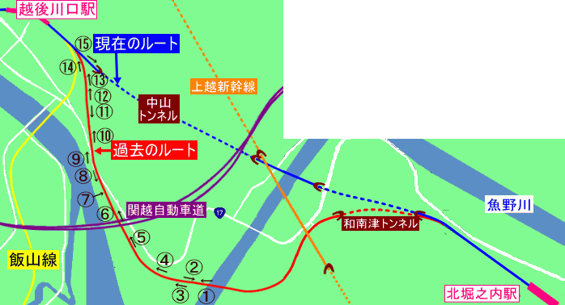
↑番号をクリックするとその地点で撮った画像へジャンプ↑
＊矢印の向きで撮影＊ |
＊北堀之内から越後川口に向かう方向で順を追って掲載
＊画像に描いてある赤いラインは旧線の推測位置を示す |
地点1
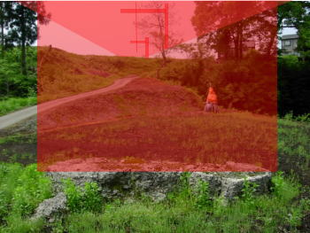 |
地点2
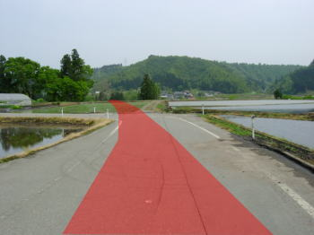 |
| ↑魚野川橋梁(旧線当時の呼名)の橋脚の基礎の一部が残っていた。 |
↑魚野川橋梁で魚野川を渡った旧線は集落部へとすすむ。 |
|
↑地図へ ↑ |
地点3
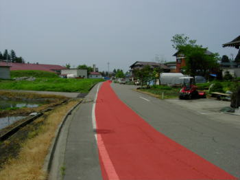 |
地点4
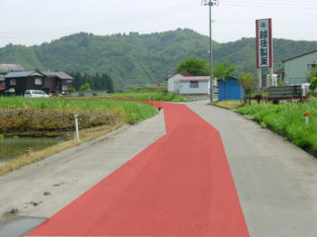 |
| ↑道路がそれらしき弧を描いていたので、旧線跡をそのまま転用したものと思われる。 |
↑越後製菓の前でカーブを描く。 |
|
↑地図へ ↑ |
地点5
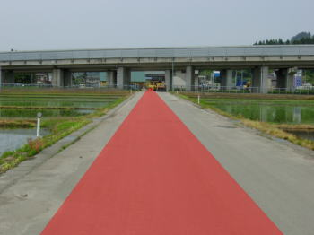 |
地点6
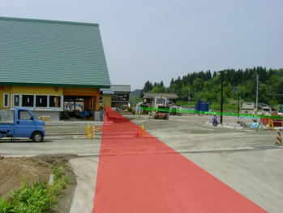 |
| ↑田園地帯をまっすぐ進む。前方の高架橋は関越自動車道。 |
↑右側の緑色のラインは現在の国道17号。画像正面の黄色の建物は、建設中の道の駅「あぐりの里」。 |
|
↑地図へ ↑ |
地点7
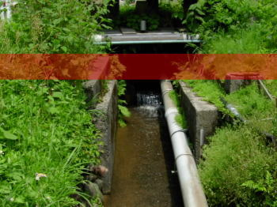 |
地点8
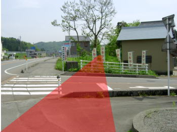 |
| ↑旧線の路盤の跡がかすかに確認できた。 |
↑ここで現在の国道17号とクロスする。旧国道17号はこの画像のすぐ右手。航空写真を見る限りでは旧線と旧17号はクロスしていなかったように見受けられるが、詳細は不明。 |
|
↑地図へ ↑ |
地点9
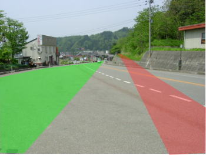 |
地点10
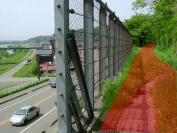 |
| ↑画像中央に横切っている道幅の広い道路が現在の国道17号。緑色の塗り潰しが旧国道17号（推測）。赤色の塗り潰しが旧上越線。 |
↑山肌を縫うようにして越後川口駅を目指す。左側は現在の国道17号。 |
|
↑地図へ ↑ |
地点11
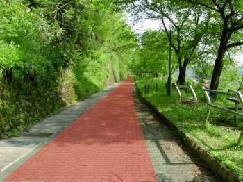 |
地点12
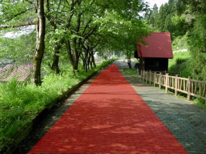 |
| ↑旧線跡は遊歩道として綺麗に整備されていた。 |
↑左の画像と同じポイントで越後川口駅方面に振り返って撮ったもの。 |
|
↑地図へ ↑ |
地点13
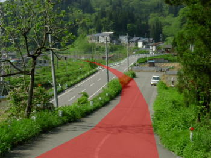 |
地点14
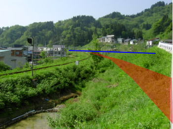 |
| ↑中山を大きく迂回した旧線は、左カーブを描きつつ越後川口駅に進入する。左側からは飯山線が近づいてくる。 |
↑左側から順に、飯山線・旧上越線跡（赤）・現在の上越線（青） |
|
↑地図へ ↑ |
地点15
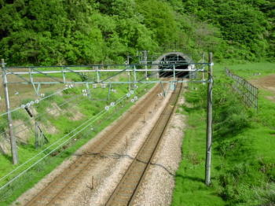 |
←現在の上越線の様子。越後川口駅を出てすぐ、ほぼ直線のまま中山トンネルに進入する。 |
>> この付近の航空写真 <<
|
北堀之内～越後川口編 おわり
その1にもどる |
↑地図へ ↑
↑ ページの先頭へ ↑ |